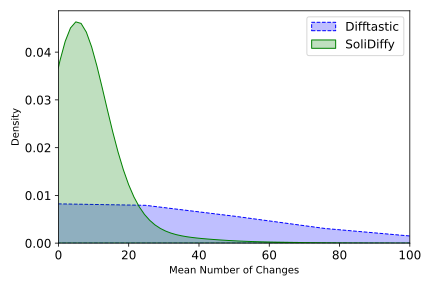
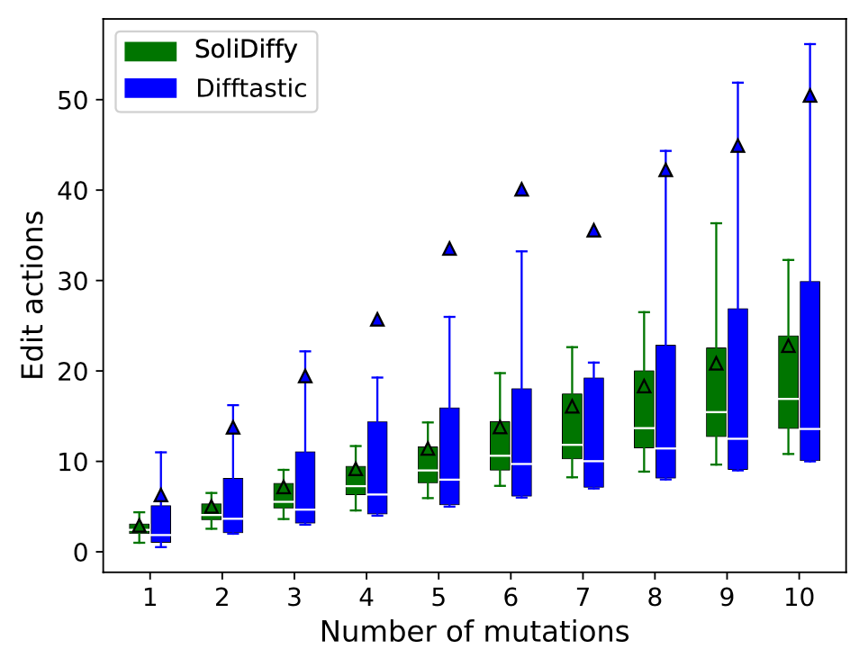
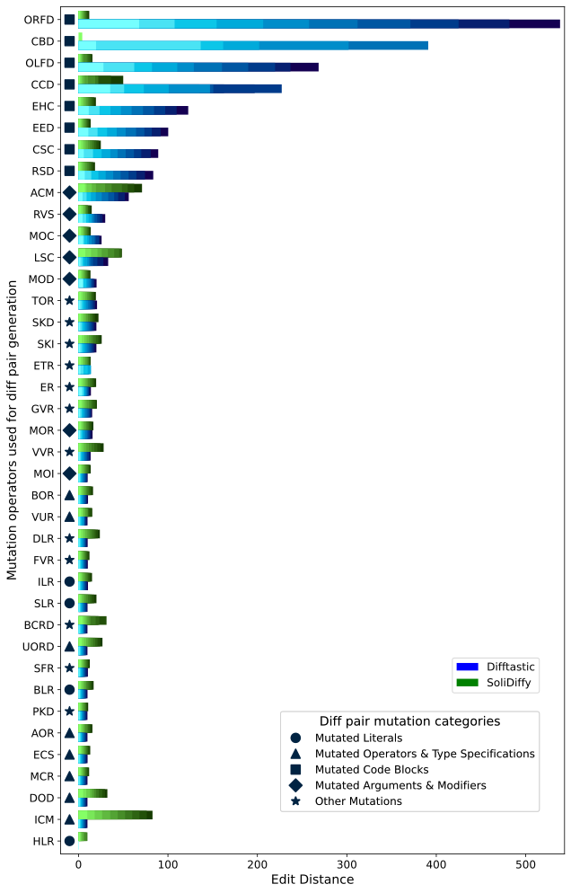

We address the need for precise and fine-grained code differencing tools in Solidity, the primary language for smart contracts on EVM-based blockchain platforms. SoliDiffy generates fine-grained edit scripts, which are crucial for tasks such code reviews and automated smart contract repair.
Research Questions
- RQ1: How does the performance of SoliDiffy compare against Difftastic?
- RQ2: How do Solidity source code differencing tools perform when there are multiple changes in the Solidity source code?
- RQ3: How does the type of syntactic changes in file affect performance of Solidity code differencing?
- RQ4: What is the developer experience for understanding AST-differences produced by SoliDiffy and Difftastic?
Results
RQ1: SoliDiffy consistently produces fewer changes across projects, reflecting its precise approach. Compared to Difftastic, which has a broader and less consistent range, SoliDiffy maintains lower edit distances, making it advantageous for minimizing transformations.

RQ2: The edit distance for both SoliDiffy and Difftastic scales linearly with the number of mutations applied, demonstrating that SoliDiffy can handle complex modifications effectively without compounding effects on performance.

RQ3: The type of syntactic changes significantly impacts performance, with SoliDiffy showing superior results in handling code block mutations and Difftastic performing better with simpler text changes.

RQ4: Developer feedback indicates that SoliDiffy's edit scripts provide a clearer representation of code changes in complex cases, although some simpler changes are more effectively captured by Difftastic’s textual approach.
| Tool | Clear Diffs | More Complex Cases |
|---|---|---|
| SoliDiffy | Consistent | Superior |
| Difftastic | Effective for Simple Changes | Struggles with Complexity |
Browsable Diffs
You can browse through our diff pairs and their respective edit scripts generated by both SoliDiffy and Difftastic.
SoliDiffy Edit Script
Difftastic Edit Script